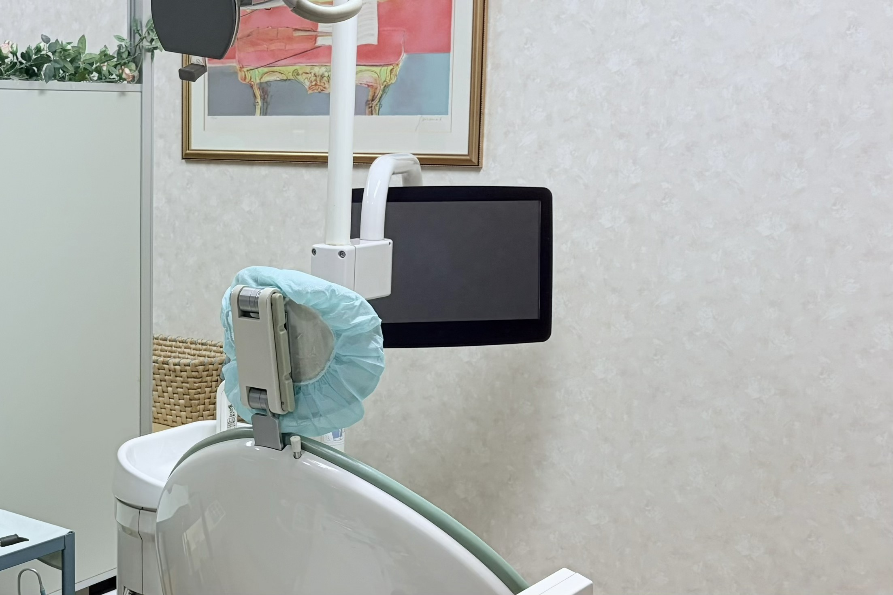
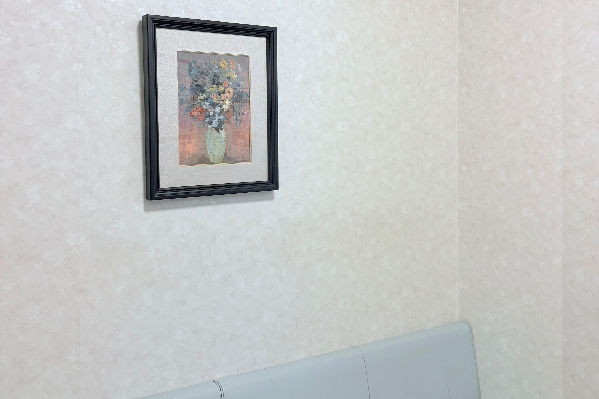
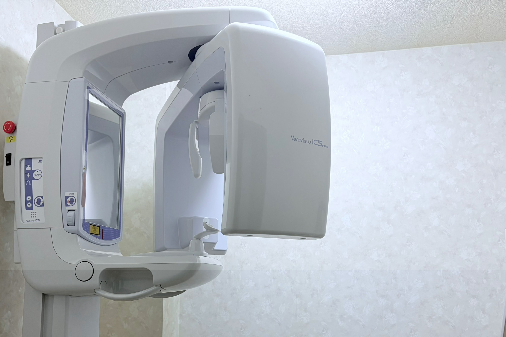

<!DOCTYPE html>
<html lang="ja">
<head>
  <meta charset="UTF-8">
  <meta name="viewport" content="width=device-width, initial-scale=1.0">

  <style>
    body {
 　　 background-color: #f4f9fc;
　　}

    header {
      background: linear-gradient(to right, #eef7fc, #eafaf1);
      color: #2a7db8;
      position: sticky;
      top: 0;
      z-index: 1000;
    }
    
    .header-inner {
      display: flex;
      align-items: center;
      justify-content: flex-start; /* ←これに変更 */
      gap: 10px; /* 文字と画像の間の余白 */
    }
    .title {
      text-align: left;
    }
    .char {
      width: 60px;   /* サイズ調整 */
      height: auto;
      flex-shrink: 0;
    }
    
    .slider {
      width: 100%;
      max-width: 800px;
      margin: auto;
    }


    .slide {
      display: none;
      position: relative;   /* ←これに変更 */
    }


    .slide.active {
      display: block;
    }
   
    .slide img {
      width: auto;      /* ←これ重要 */
      max-width: 100%;  /* はみ出し防止 */
      height: auto;
    }
/* 👇テキスト */
    .slide-text {
      position: absolute;
      bottom: 20px;
      left: 20px;
      color: white;
      font-size: 20px;
      font-weight: bold;
      text-shadow: 0 2px 8px rgba(0,0,0,0.5);
    }

    
    
    section {
      padding: 20px;
      margin: 10px;
      background: white;
      border-radius: 10px;
    }

  h2 {
    color: #2a7db8;
  }
    
  header h1 {
    margin: 0;
    font-size: 24px;
  }

  header p {
    margin-top: 5px;
    font-size: 14px;
    color: #666;
  }

  .container {
    max-width: 800px;
    margin: auto;
    text-align: center;
  }

  .tel {
    font-size: 20px;
    color: #2a7db8;
    font-weight: bold;
  }

  .tel a {
    color: #2a7db8;
    text-decoration: none;
    font-weight: bold;
  }

  .call-btn {
    display: inline-block;
    background-color: #ffffff;
    color: #2a7db8;
    padding: 12px 20px;
    border-radius: 30px;
    text-decoration: none;
    border: 2px solid #2a7db8;
    max-width: 100%;   /* ←これ追加 */
    box-sizing: border-box; /* ←これ重要 */
  }
    td, th {
      height: 60px;
      vertical-align: middle;
    }
    th {
      background-color: #e3f2fb;
      color: #2a7db8;
    }

    td:first-child {
      background-color: #e3f2fb;  /* ←時間の列 */
      color: #2a7db8;
      font-weight: bold;
    }
  html {
    scroll-behavior: smooth;
  }

  
        
  @media (max-width: 600px) {
    .char {
      width: 40px;
    }

  .header-inner {
    flex-direction: row;
  }
}
    h1 {
      font-size: 20px;
    }
    h2 {
      font-size: 18px;
    }
    
    section {
      margin: 10px;
      padding: 15px;
    }
    
    .call-btn {
      width: 100%;
      text-align: center;
      padding: 15px;
      font-size: 18px;
    }
    
    table {
      font-size: 12px;
    }
    
    th, td {
      width: calc(100% / 8);
    }
    th:first-child,
    td:first-child {
      width: 120px;
    }
  }

.slider {
  position: relative;
  width: 100%;
  max-width: 600px;
  margin: auto;
}

.slide {
  width: 100%;
  display: none;
  border-radius: 10px;
}

.slide.active {
  display: block;
}
    
</style>
</head>
<body>

</body>

<style>
.img {
  width: 300px;
}
</style>
  
<header>
  <div class="container">
    <div class="header-inner">
      
      <div class="title">
        <h1>服部歯科医院</h1>
        <p>HATTORI DENTAL CLINIC</p>
      </div>

      
      
    </div>
  </div>
</header>


<div class="slider">
  
  <div class="slide active">
    
    <div class="slide-text">地域に寄り添う医療</div>
  </div>

  <div class="slide">
    
    <div class="slide-text">安心できる診療</div>
  </div>

  <div class="slide">
    
    <div class="slide-text">丁寧な対応を大切に</div>
  </div>

</div>

<!-- 👇JSはここ！！ -->
<script>
  const slides = document.querySelectorAll(".slide");
  let index = 0;

  setInterval(() => {
    slides[index].classList.remove("active");
    index = (index + 1) % slides.length;
    slides[index].classList.add("active");
  }, 3000);
</script>

</body>
</html>


<section>
  <h2>診療時間</h2>

  <table border="1" style="width:100%; text-align:center; border-collapse: collapse; table-layout: fixed;">
  <tr style="background-color:#e3f2fb; color:#2a7db8;">
  
    <th style="width:120px;">時間</th>
    <th>月</th>
    <th>火</th>
    <th>水</th>
    <th>木</th>
    <th>金</th>
    <th>土</th>
    <th>日</th>
  </tr>

    <tr>
      <td>9:00〜12:00</td>
      <td>○</td>
      <td>○</td>
      <td>○</td>
      <td>○</td>
      <td>○</td>
      <td>○</td>
      <td>×</td>
    </tr>

    <tr>
  <td>16:00〜19:00</td>
  <td>○</td>
  <td style="vertical-align: middle; height:60px;">
  ○<br>
  <span style="font-size:11px;">(※)</span>
</td>
  <td>×</td>
  <td>○</td>
  <td style="vertical-align: middle; height:60px;">
  ○<br>
  <span style="font-size:11px;">(※)</span>
</td>
  <td>×</td>
  <td>×</td>
</tr>


  </table>

  <p>※火曜・金曜の午後は16:30から診療です。</p>
  <p>日曜・祝日は休診です。</p>
</section>
<section>
  <h2>診療内容</h2>
  <p>眼科・コンタクト・視力検査など</p>
</section>

<section>
  <h2>アクセス</h2>
  <iframe 
    src="https://www.google.com/maps/embed?pb=!1m18!1m12!1m3!1d3266.6479566210814!2d135.74955570000003!3d35.04053599999999!2m3!1f0!2f0!3f0!3m2!1i1024!2i768!4f13.1!3m3!1m2!1s0x600107fc8bade6cd%3A0x8c78d15112427b82!2z5pyN6YOo5q2v56eR5Yy76Zmi!5e0!3m2!1sja!2sjp!4v1777447084681!5m2!1sja!2sjp"
    style="width:100%; height:250px; border:0;"
    loading="lazy">
    
  </iframe>

  <p>〒603-8214 </p>
  <p>京都府京都市北区紫野雲林院町４９</p>
  <p>バス：北大路堀川、大徳寺前から徒歩約2分</p>
  <p>駐車場あり</p>
</section>

<section>
  <h2>電話番号</h2>
  <p class="tel">
  <a href="tel:075-441-7576" class="call-btn">075-441-7576</a>
</p>
</section>

<section id="aisatsu">
  <h2>院長挨拶</h2>
  <p>地域に寄り添った医療を提供します...</p>
</section>

<a href="#aisatsu">院長挨拶はこちら</a>
  
</div>

</body>
</html>
